Flora — Design System for Grupo Boticário’s Scheduling Team
I created Flora from scratch for Grupo Boticário’s scheduling team. Following Grupo Boticário’s branding, we developed our own visual language and components to support the product.
Build a system of reusable components that embodies beauty and efficiency, giving product teams the freedom to focus on creating exceptional experiences for their customers.
From brand direction to a reusable system
- 01
Frame the purpose
Define a shared foundation for Grupo Boticário’s scheduling team.
- 02
Lead & collaborate
Own research and design with feedback, QA, and brainstorming from three designers.
- 03
Build the system
Translate the brand into foundations, components, and documentation.
- 04
Explore the library
Inspect the Figma file and detailed component specifications.
A shared foundation for a growing scheduling product
Flora was created as the design system for Grupo Boticário’s scheduling team, giving product squads a shared foundation for building scheduling experiences.
The goal was to streamline component development, establish consistent standards, and support a broader ecosystem of brands. Reusable components would give teams more room to focus on the experiences they were creating.
My role & collaboration
Flora was developed with contributions from four designers. I led the work, with a hands-on focus on research, accessibility, visual design, and building the Figma library.
The other three designers helped shape the system through brainstorming, component reviews, and design QA. Their feedback informed refinements to the visual language, components, and documentation throughout the process.
From brand reference to a reusable system
Translate the brand
I used Grupo Boticário’s branding as a reference and created Flora’s own visual language and components for the scheduling product.
Structure the library
I organized the Figma library around reusable foundations and components. The file includes tokens, spacing, grids, borders, and shadows alongside the component families.
Make the details explicit
The library includes a user guide, changelog, accessibility guidance, and design annotations. The Slider documentation brings together component parts, specifications, colors, and motion.
Designed for reuse beyond a single screen
Separate brand expression from structure
Flora’s theming approach combines brand-neutral components with brand-specific styling. The intention is to respect each brand’s identity while sharing a common foundation.
Consider different product contexts
A component can originate in one product. Flora’s guiding principle is to consider its use across value streams, including different user needs, before treating it as broadly reusable.
Include accessibility from the start
Flora’s principles consider people with disabilities, older adults, and people with limited digital experience from the foundational component level. Supporting different development stacks is also part of the system’s intended scope.
A living, interconnected library
The name Flora reflects a complex, organized system that continues to evolve. This overview captures its purpose, goals, and guiding principles.
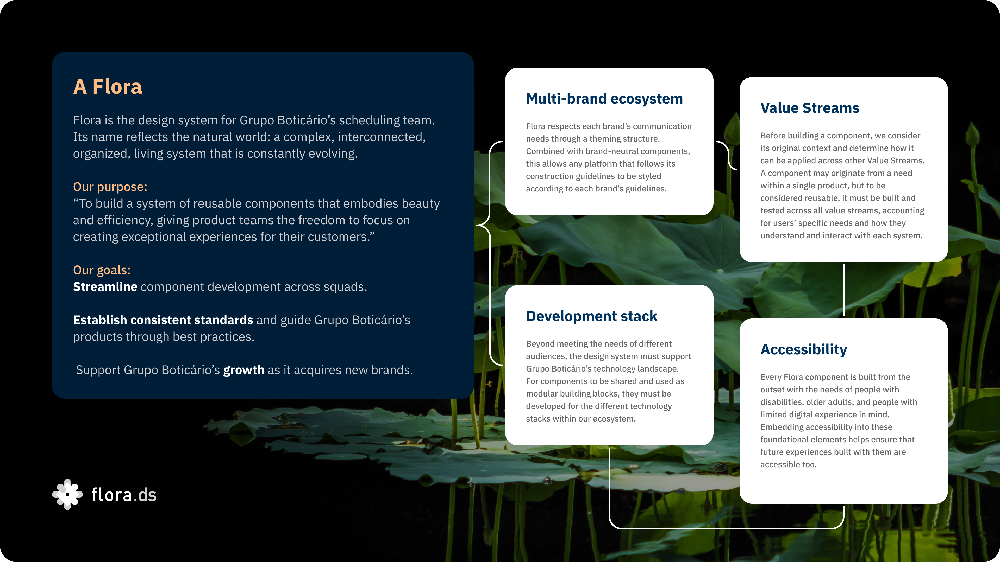
The Flora Figma library
Explore the foundations, tokens, components, and documentation in the original Figma file, including the detailed Slider component.
If the preview is unavailable, use “Open in Figma” to explore the library.
A closer look at the system
Selected documentation from Flora, from visual foundations and named tokens to reusable button variants.
Borders & radius
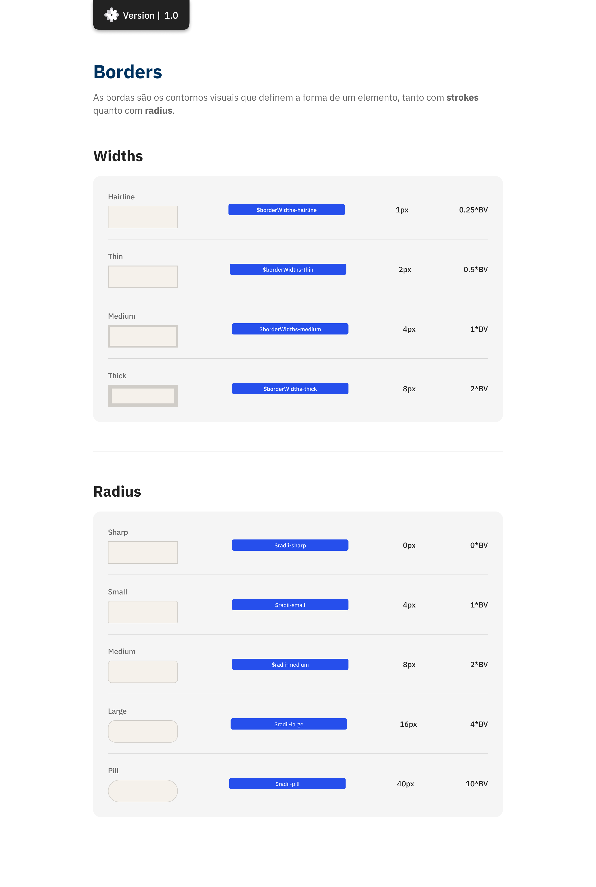
Typography
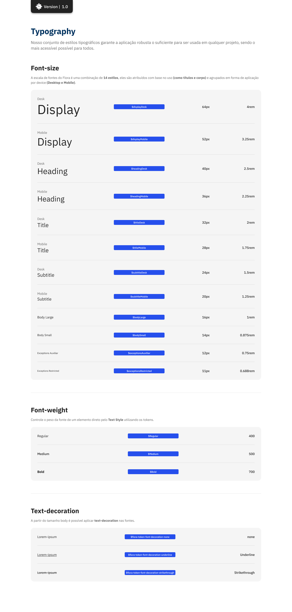
Colors
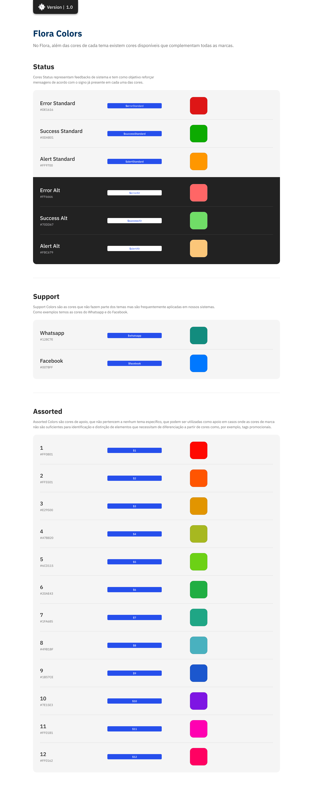
Button components
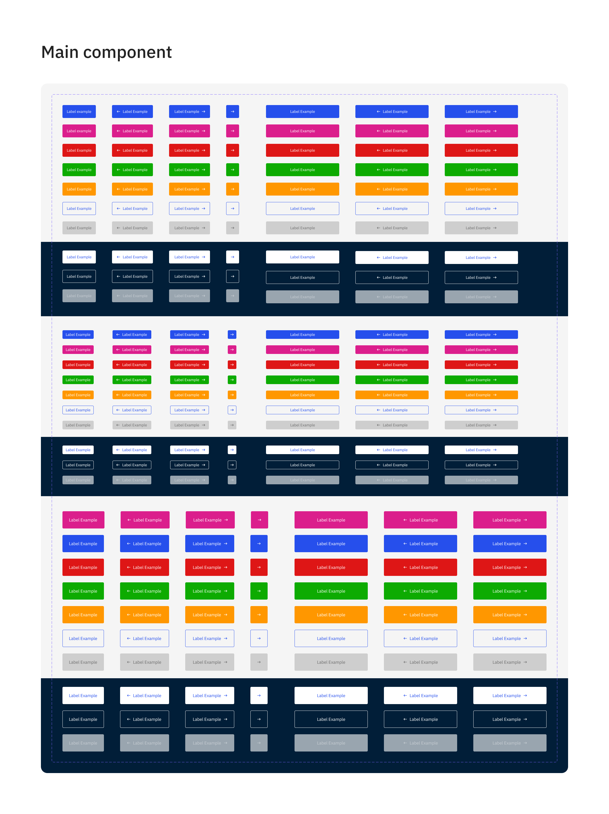
From components to complete interfaces
Application examples show how Flora’s foundations and components come together in complete layouts.
Login & account access
Desktop and mobile login examples apply Flora’s typography, input fields, buttons, and links. Password recovery and new-password screens extend the same components across the account access flow.
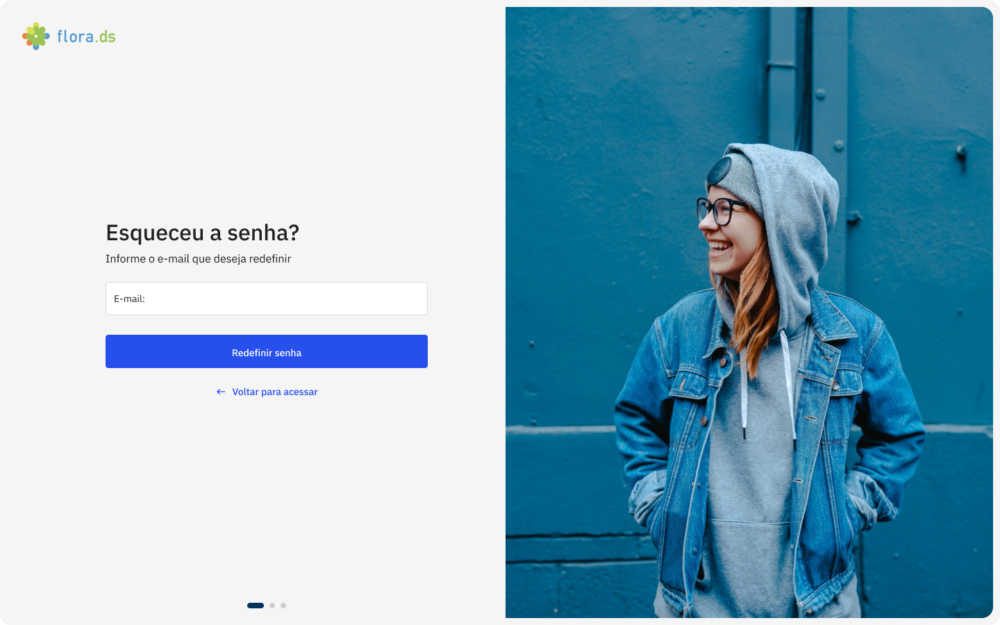
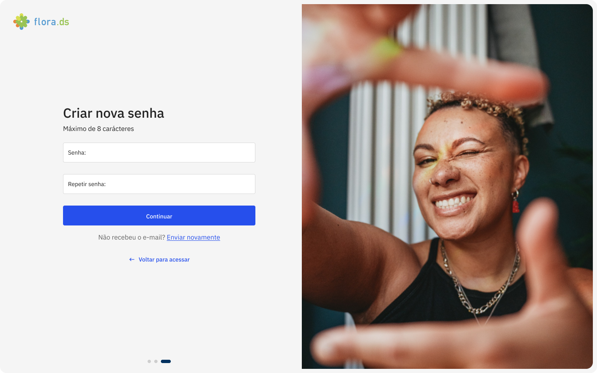
Data-heavy interfaces
Desktop and mobile examples combine metric cards, date controls, filters, status indicators, tables, and pagination. The mobile layout stacks filters vertically and presents a horizontally scrollable table with a fixed leading column.
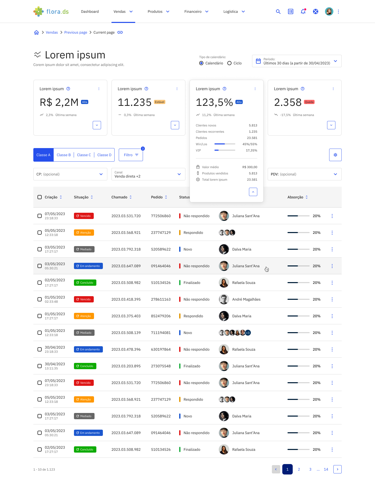
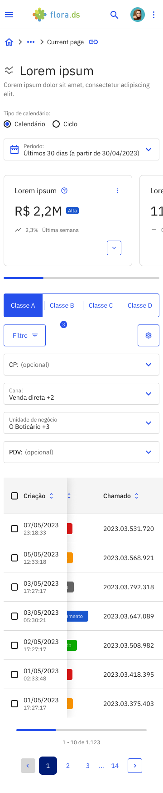
Dashboards
Desktop and mobile examples combine navigation, buttons, metric cards, charts, and tables within a shared visual language.
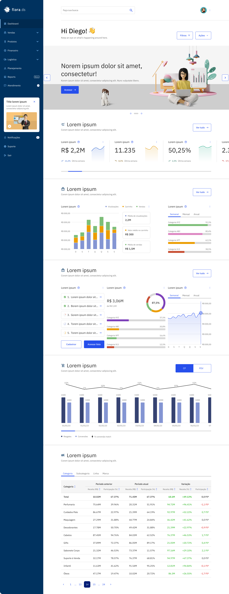
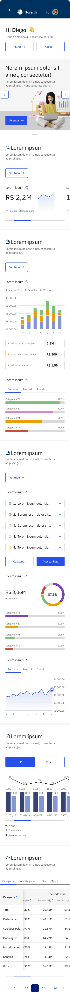